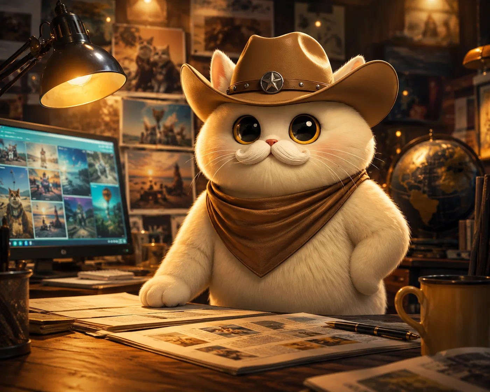
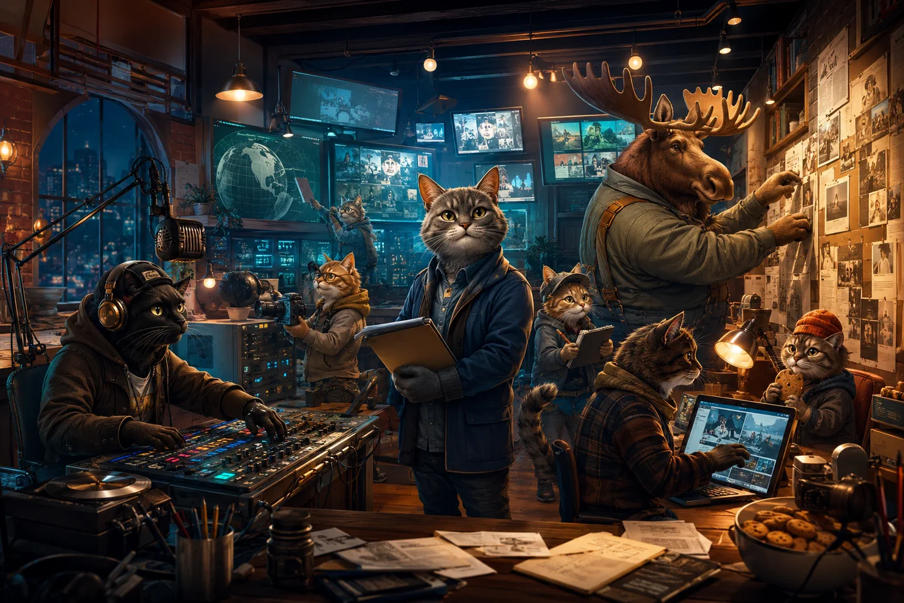
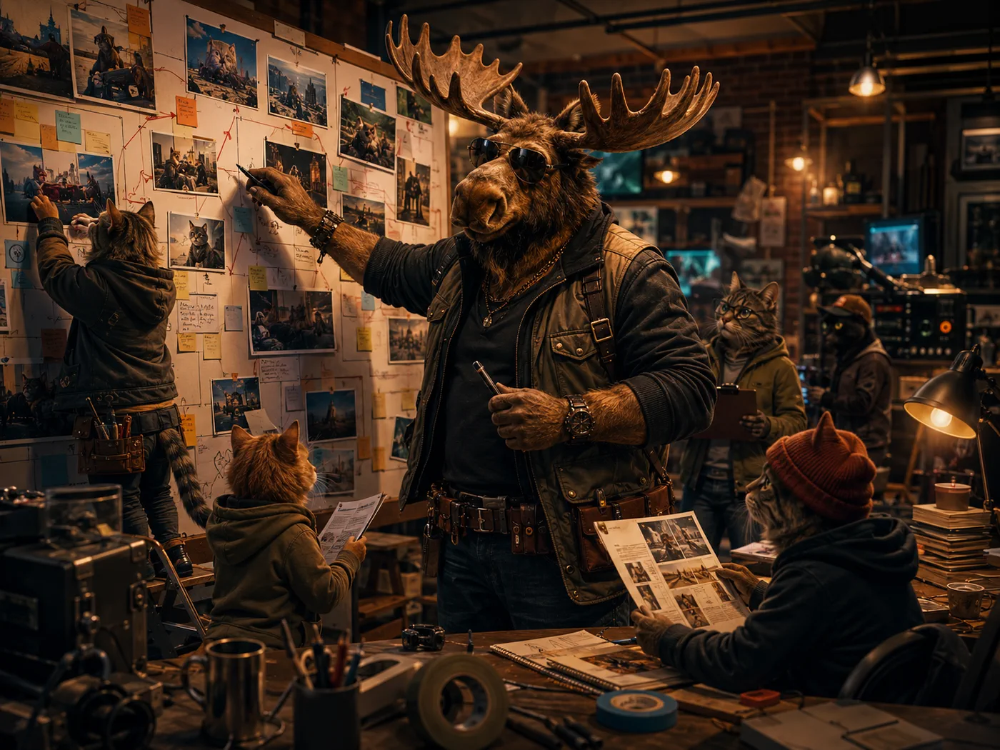

Civic Signals
Short updates on public-interest tools, local trust work, and useful civic explainers from CitizenApproved, MinnesotaPeace, and beyond.
goodflippinnews.com
Good Flippin News tracks civic progress, creative releases, and practical ways to help without turning the feed into doomscrolling.
first mvp
Short updates on public-interest tools, local trust work, and useful civic explainers from CitizenApproved, MinnesotaPeace, and beyond.
Music, art, and release notes from Good Flippin Vibes, Heavy Moose, and the broader creative canon — so supporters always know what shipped next.
Transparent progress across Good Flippin Design, AIAimate, and CultureSherpa. Open by default. No spin.

Editor-in-heart. Spots the hopeful angle in every hard story.

Breaking updates from every corner where kindness is happening.
Runs the rhythm desk. Every bulletin gets a pulse and a beat.

When the city sleeps, this duo writes tomorrow's brighter first draft.
Chief Optimism Officer. Signs off on every story with "Tell me where the hope lives."
Audio editor. Turns stressful interviews into "you got this" radio moments.
Production lead. Builds giant whiteboards and keeps everyone moving when deadlines wobble.
Photo scouts, headline testers, snack auditors, and accidental philosophy department.
Warm and determined. You can feel the streetlights cheering for everyone.
Dispatches — Issue 2 & Issue 1
Three lanes. Real links. No doomscrolling required.
Issue 2 — June 26, 2026
Courts are backlogged. Tempers are running high. Community organizations, HR departments, and co-parenting families are all looking for something that doesn't involve a two-year legal process. Mediation fills that gap — and MinnesotaPeace.com is the clearest local resource for understanding what professional mediation looks like in Minnesota. The site covers the process, the practitioners, and what to expect when you decide to resolve conflict the human way. If you've been watching national headlines and feeling like we could use more of this kind of thing locally, this is where that work lives.
The Good Flippin Vibes creative universe has more than one sound. While Heavy Moose occupies the industrial end of the spectrum, Aardvarco is doing something weirder and warmer — genre-blurring tracks that sit somewhere between late-night ambient and unexpected pop, with lyrics that sound like someone thinking out loud in a very interesting room. Both catalogs live under the GFV umbrella and are available to stream on all major platforms. Explore the Aardvarco page for streaming links and liner notes.
This week the Good Flippin Design team ran a full SEO pass across both new incubation sites — adding JSON-LD structured data (WebApplication, FAQPage, NewsMediaOrganization, Organization schemas), Open Graph image tags, Twitter card meta, and proper robots directives. Both Good Flippin News and Good Flippin Luck now have the metadata needed for Google rich results — FAQ panels for the game, NewsArticle microdata for each dispatch. Cross-links were also added to the main GFD site footer and the full music catalog, so every surface in the ecosystem now points back and forth. The foundation for organic discovery is in place. Next: custom domain hookups and Issue 3 of the dispatch.
Issue 1 — June 12, 2026
Minnesota is home to a strong mediation tradition, and MinnesotaPeace.com now gives that tradition a public web presence. The site covers professional mediation services, conflict resolution resources, and community peace work — built by Good Flippin Design as part of the broader civic-tech ecosystem. If you or someone you know is navigating a dispute — family, workplace, neighbor, or organizational — mediation is often faster, cheaper, and more humane than litigation. Browse the site and share it with anyone who might need it.
Heavy Moose is the industrial/experimental music project from the Good Flippin Vibes creative universe, and both debut albums — DROSS I and DROSS II — are now available to stream. The sound sits at the intersection of neon texture, machine weight, and something that feels like the inside of a very well-lit factory at 2 AM. Visit heavymoose.com to find streaming links, album notes, and the full character canon. If you're the kind of person who plays music while building things, this is your playlist.
Two new incubation sites shipped this week under the Good Flippin ecosystem. Good Flippin News (this site) is a sponsor-safe dispatch surface covering civic progress, creative releases, and transparent build notes from across the network. Good Flippin Luck is a playable Maze Snake Fortune game where clearing enough stars unlocks a shareable blessing from the Good Flippin Vibes vault — a lightweight, shareable lead-gen and creative promo experiment. Both are incubation-stage, which means they're live but still evolving. Neither costs anything to run on Cloudflare Pages. The Good Flippin Design studio and Good Flippin Vibes brand continue to grow as the parent infrastructure for everything listed here.
Stay in the loop: join dispatch updates or follow on X.